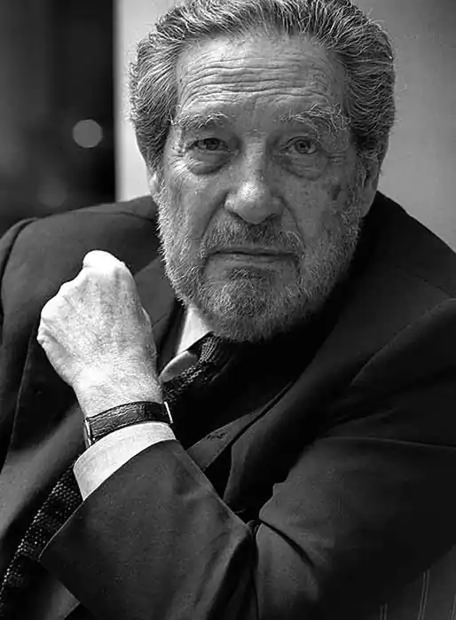
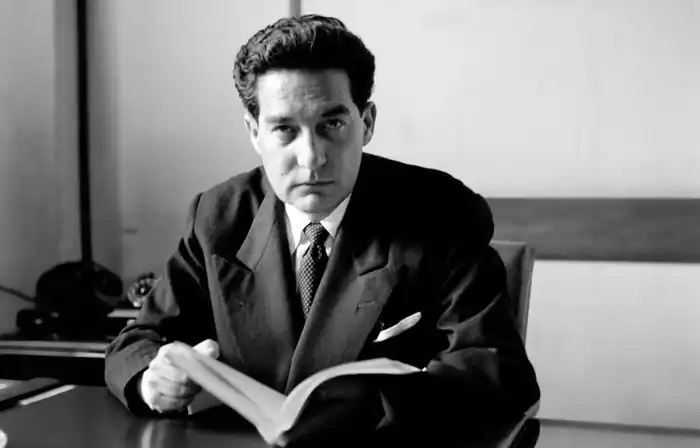
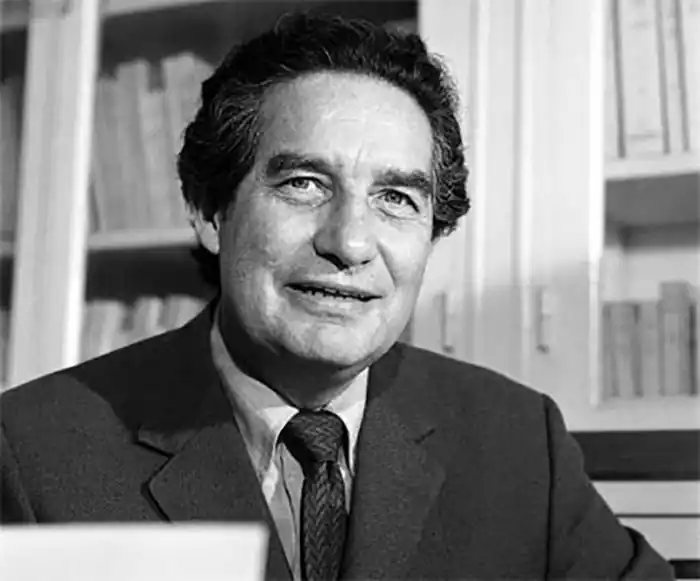

ПАС, Октавіо (Paz, Octavio — 31.03.1914, Мехіко — 19.04. 1998, там само) — мексиканський поет, лауреат Нобелівської премії 1990 р.Характерною рисою поетичного мислення Паса вважають універсалізм. Як зауважив К. Фуентес, "для Паса література — синонім цивілізації. Я не знаю жодного із теперішніх письменників, хто би настільки потужно зміг виразити множинність часу, множинність можливостей досягнення гармонії та правди, вийшовши за обмежувальні рамки успадкованих нами догм".
Пас народився у сім'ї відомого столичного адвоката і журналіста. Його дитинство проминуло у передмісті Мехіко. Віршувати розпочав у 14 років. У його віршах дивовижно злилися "чужі голоси" європейської та східної мудрості та поезії. За словами К. Фуентеса, Пас — "син Мексики, брат Латинської Америки, пасерб Іспанії, приймак Франції, Англії й Італії, сімейний друг Японії й Індії, позашлюбний син (як зараз усі ми) Сполучених Штатів". Метафора "людина-оркестр" відображає глибинну суть його світогляду і поетики: В. Блейк, В. Вордсворт, С. Т. Колрідж, Новаліс, Ф. Гельдерлін, Ш. Бодлер, А. Рембо, Лотреамон, С. Малларме, Ґ. Аполлінер, Ф. Пессоа, М. де Унамуно — це лише незначна частина того, що органічно та природно "вросло" у світ поета.
У 1933 р. відбувся поетичний дебют Паса: вийшла друком його збірка "Дикий Місяць". У 1937 р. з'явилися збірки "Корінь людський" ("Raiz de hombre") і "Вони не пройдуть!" ("No pasaran!"), де ще тільки окреслилися основні лінії його подальшої творчості. У 40-х pp. Пас прийшов до роздумів про міф, культуру та поезію. У 1958 р. вийшла друком поетична збірка "Свобода під чесне слово" (або "Свобода у затінку слова" — "Libertad bajo palabra"), а також книга есеїстики "Лук і ліра". Це стало своєрідним підбиттям підсумків. Взаємозв'язок творчості та рефлексії стає для Паса принциповим. Він дає таке означення поезії: "У вірші буття і спрага буття на миттєвість возз'єднуються, як плід і губи. Поезія — миттєве замирення: вчора, сьогодні, завтра, тут і там; ти і я; він; ми; все у ній є, всім вона буде". У 1944—1945 pp. Пас отримав Гуггенхеймівську стипендію, жив у США, познайомився з Р. Фростом. У 1945 р. пішов на дипломатичну роботу і виїхав у Париж. У 1950 р. в аргентинському журналі "Сур" опублікував документи про ГУЛАГ, за що його "піддали публічному остракізму". У 1952 р. П. мандрував по Індії та Японії, після чого ґрунтовно зайнявся східною культурою. Проте кар'єра дипломата не відбулася, оскільки Паса звільнили за антиурядові висловлювання. У творчості Паса 50—60-х pp. можна виокремити два поетичні центри: проблема національного характеру (мексиканського та латиноамериканського: "Лабіринт самотності" — "Е1 laberinto de iasoledad", 1950; "Постскриптум" — "Posdata", 1970) і природа поетичного покликання, роль поета у сьогоднішньому світі ("Лук і ліра", 1956; "Досвід небувалого", 1957). Поетичну творчість Паса характеризує достатньо метафорично — це "сальто-мортале", "кидок до іншого берега", "потрясіння людських основ". В утопічній системі Паса головна роль відведена слову — початку всього. Словом можна змінити світ, створити нові реалії. Звідси і шлях поезії — пошуки аналогій. "Поезія — один із проявів аналогії: рими й алітерації, метафори та метонімії як способів мислення аналогіями": Я наготу свою прикрив. І тихо вийшов.Сміявся ангел. І зірвався вітер,і він піском засипав мої очі.Пісок і вітер — се мої слова:не ми живем, нас час живими робить.("Повернення") В естетиці Паса виокремлюються такі ключові поняття, як "іншість" — здатність людини поглянути на себе очима іншого і через його серце усвідомити образ свого "я" і "мовчання" — "активні порожнечі", які дають можливість зрозуміти архетипи людської свідомості та передбачати майбутнє. Життя та поезія співіснують у непримиренності і нерозривності їхніх полюсів (кохання, зустріч стихій, "пристрасна мрія про єдиного друга"): "Два тіла", "Нічна вода", "Майтхуна". Ерос у Паса "дотикається до поезії та релігії... І тут, і там реальність переходить в образ, а образ обростає плоттю... Кохання — це визнання того, що кожен із нас — неповторна особистість". Із часом у творчості Паса з'явилася ще одна принципово важлива тема: критика сучасної цивілізації ("Змінний струм "— "Corriente altema", 1967; "Діти болота" — "Los hijos del limo", 1974; "Людинолюбний людожер", 1979 та ін.): Хліб згризений, і зжована любов,натомість неї невидиме пруття,і кліть, і в кліті научена сучкау парі з рукоблудом павіаном,а що ти зжер — тебе не може зжерти,і жертва гицелем стає. Суцільні трупи днів, газетне сміття,і чад ночей, відіткнутих поспішно,і галстук вранці ковзає петлею:"Не злись, блощице, ранок зустрічай..."Пустельний світ, і меж нема пустелі,рай — на замку, і в пеклі ні душі. ("Обірвана елегія ")Підсумує Пас свої невеселі роздуми на цю тему у лекції, виголошеній з нагоди вручення йому Нобелівської премії: "На наших очах майбутнє западається. Ідея сучасності знецінюється, мода на настільки сумнівне поняття, як "постмодернізм", минається, і не тільки у мистецтві та літературі... У самій серцевині впорядкованості, правильності та зв'язності — у точних і природничих науках — знову оживають старі поняття випадковості та непередбачуваності. І це тривожне воскресіння наштовхує мене на думку про жахіття тисячного року та тужливі передчуття ацтеків наприкінці кожного космічного циклу". Пас продовжував писати лірику та займатися есеїстикою, намагаючись віднайти внутрішню гармонію. У 1982 р. вийшла друком автобіографічна книга "Сестра Хуана Інеса де ла Крус, або Западні віри" ("Sor Juana Ines de la Cruz, о Las trampas de la fe"). У 1981 p. він став лауреатом іспанської премії М. де Сервантеса за поезію, згодом — французької премії А. де Токвіля за есеїстику та премії Британської енциклопедії "за виняткові заслуги у поширенні знань задля блага людства". І як підсумок творчого шляху — Нобелівська премія з літератури "за пристрасні всеоб'ємні твори, позначені чуттєвим інтелектом і гуманістичною цілісністю". Він був почесним членом американської Академії мистецтв, доктором університетів Мехіко і Гарвард. У 1994 р. вийшла друком присвячена Пасу антологія "Слова як мости", куди ввійшли адресовані 80-річному Пасу вірші видатних поетів світу, включаючи Ч. Мілоша, Й. Бродського, Д. Волкотта, Іва Бонфуа.